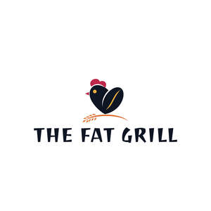

Trade Mark Journal No.2025/032 8 August 2025
UK00004240074 27 July 2025 (43)

- Class 43
- Takeaway food services; Takeaway food and drink services; Take-away food services; Take-away food and drink services; Take-away fast food services; Provision of food and drink in restaurants; Take-away restaurant services; Food and drink catering; Catering of food and drink; Catering (Food and drink -); Catering of food and drinks; Fast food restaurants; Catering for the provision of food and drink; Serving food and drink in doughnut shops; Serving food and drinks; Preparation of food and drink; Providing food and drink in doughnut shops; Food and drink catering for institutions; Takeaway services; Catering for the provision of food and beverages; Serving food and drink for guests in restaurants; Provision of food and drink; Preparation of food and beverages; Serving food and drink in restaurants and bars; Provision of food and beverages; Providing food and drink for guests in restaurants; Providing food and drink in restaurants and bars; Restaurant services for the provision of fast food; Providing food and drink in bistros; Serving food and drink in Internet cafes; Food preparation; Providing food and drink; Providing of food and drink; Food and drink catering for banquets; Food and drink preparation services; Services for the preparation of food and drink; Hospitality services [food and drink]; Providing food and beverages; Providing food and drink in Internet cafes; Food reviewing services [provision of information about food and drinks]; Corporate hospitality (provision of food and drink); Catering services for the provision of food and drink; Take-out restaurant services; Serving food and drink for guests; Food and drink catering for cocktail parties; Preparation and provision of food and drink for immediate consumption; Services for the provision of food and drink; Providing food and drink for guests; Decorating of food; Services for providing food and drink; Fast-food restaurant services; Carry-out restaurants; Sushi restaurant services; Hotel restaurant services; Bar and restaurant services; Restaurant and bar services; Carvery restaurant services; Restaurant services; Ramen restaurant services; Salad bars [restaurant services]; Tempura restaurant services; Restaurant reservation services; Washoku restaurant services; Restaurants; Japanese restaurant services; Self-service restaurant services; Grill restaurants; Mobile restaurant services; Reservation of restaurants; Spanish restaurant services; Booking of restaurant seats; Udon and soba restaurant services; Catering in fast-food cafeterias; Restaurants (Self-service -); Self-service restaurants; Tourist restaurants; Restaurant services incorporating licensed bar facilities; Bistro services; Delicatessens [restaurants]; Providing restaurant services; Restaurant information services; Eateries; Restaurant services provided by hotels; Brasserie services; Reservation and booking services for restaurants and meals; Cafe services; Hotel catering services; Agency services for reservation of restaurants; Hotel reservations; Cocktail lounge buffets; Resort hotel services; Making reservations and bookings for restaurants and meals; Catering services for company cafeterias; Café services; Hotel reservation services; Reservation of hotel accommodation; Providing reviews of restaurants and bars; Hotel services; Wine bar services; Providing hotel and motel services; Hotel accommodation reservation services; Pet hotel services; Providing food and drink catering services for exhibition facilities; Guesthouse; Providing room reservation and hotel reservation services; Catering services for providing European-style cuisine; Beer bar services; Snack bar services; Consultancy services in the field of food and drink catering; Tapas bars; Pizza parlors; Providing reviews of restaurants; Catering services for providing Japanese cuisine; Club services for the provision of food and drink; Providing food and drink catering services for convention facilities; Rental of dishes; Coffee bar services; Night club services [provision of food]; Providing food and drink catering services for fair and exhibition facilities; Hotel room booking services; Hookah bar services; Hotel accommodation services; Catering services for providing Spanish cuisine; Private members dining club services; Self-service cafeteria services; Catering; Cafeteria services.
THE FAT GRILL LTD